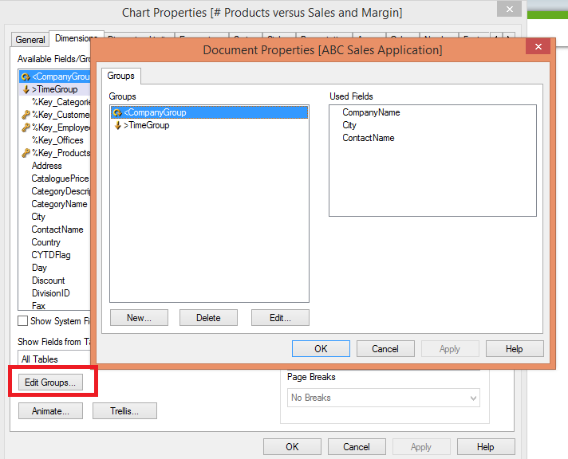
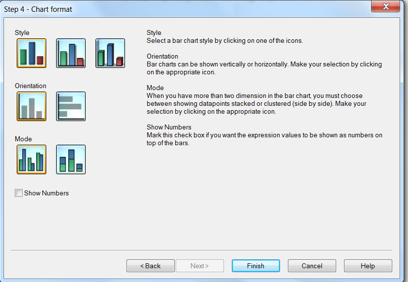
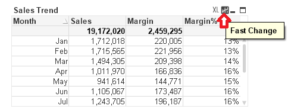
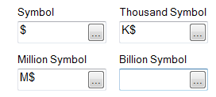
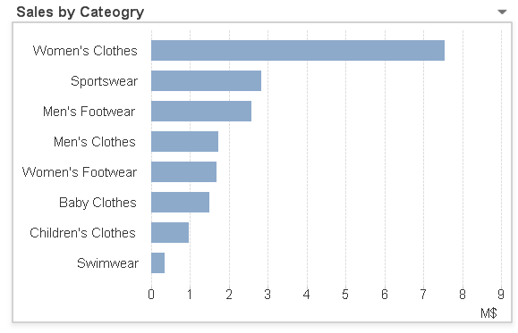
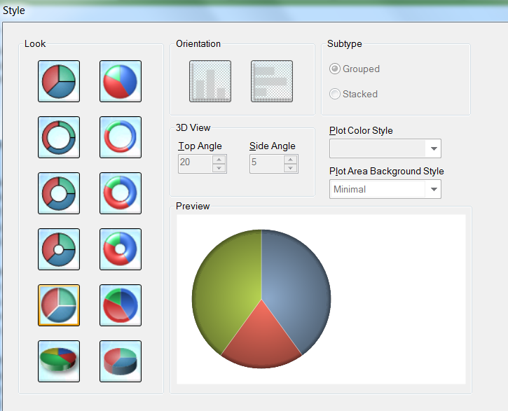
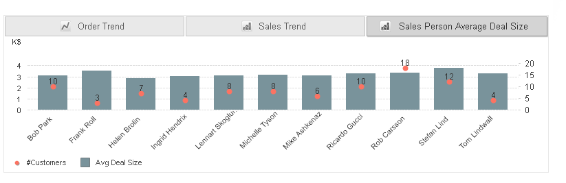
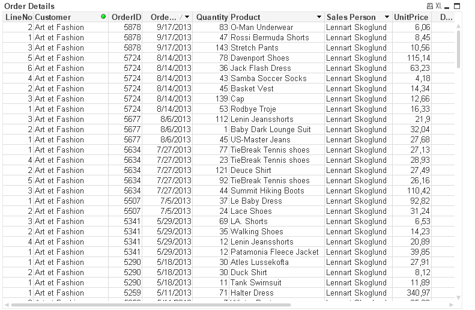
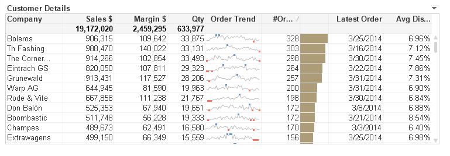
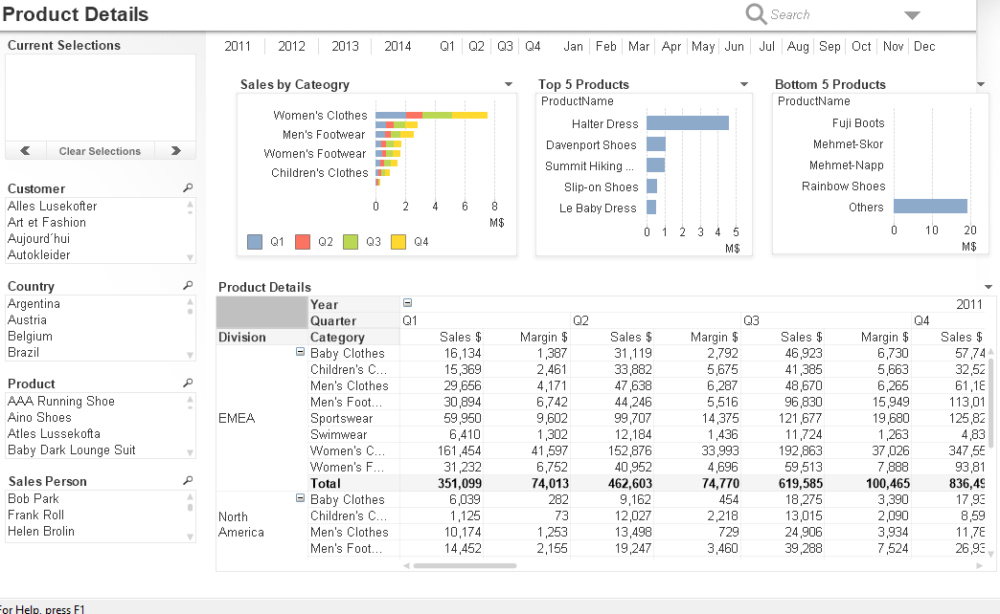

Objectives
In this lab you will develop several different types of groups and investigate table design.
Groups
Dimension Groups
You can create drill down or cyclic field groups to be used as dimensions. A list shows all groups in the document. An icon to the left of each group name indicates whether it is a drill down group or a cyclic group. You can select a group by clicking in the list. The selected groups are shown in the Used Fields area.

Drill-Down groups
When several fields form a natural hierarchy, it makes sense to create a drill-down group. Typical examples of hierarchic groups are:
- Time: Year, Quarter, Month
- Geography: Continent, Country, State, City
When you use a drill-down group as a dimension in a chart, the chart uses the first field in the group's list of fields that has more than one possible value. If you make selections that cause the field to have only one possible value, the next field in the list is used instead, provided that it has more than one possible value. If no field in the list has more than one possible value, the last field is used anyway.
For example Year is used as the chart dimension until a single year is selected. The chart would then show the Quarter's for that year, if a single quarter is selected the chart switches to Month.
As selections disappear so that more than one field becomes available in the upper fields of the group's field list, the chart is automatically drilled back up. You can force a drill up by clicking on the drill-up icon in the chart.
Cyclic groups
Sometimes you may find it useful to group fields that do not form a natural hierarchy. You then enable the user to make quick changes to the data to be displayed in the chart or list box.
You can group any fields together in a cyclic group. When a cyclic group is used as a chart dimension, the chart initially uses the first field in the list. You may then switch to another field by clicking the cycle icon in the chart. The fields are displayed in teh order in which they appear in the group's field list. When the last field in the list has been used, the turn goes back to the first field again. In this way the chart may cycle through the field indefinitely.
Fast Type Change
As a designer, you are often challenged by the limited screen area. Imagine having two different user types in your audience. One group, prefers visual charts and the other absolutely wants to see numbers, preferably in a table. you don't need to create two separate objects in order to serve both user types.
The type of chart can be changed by user without going to the chart properties dialog, provided that the fast type change option has been selected on the general tab of the properties.
An icon showing the next available chart type displays in the chart. When you left click the icon, the chart changes to the indicated type. When you right click the icon, you see a drow down menu with all the available types.
You can choose the position of the fast type change icon. If you choose Caption, the icon displays in the chart caption, provided your caption is shown. If you choose In Chart, the icon displays inside the chart, provided that the chart is not a pivot table or straight table.
Groups and Fast Type Change Option
On the Dashboard sheet you want to show the Sales Trend as a table.
- Go to properties of the sales trend on the dashboard sheet.
- In General choose Combo Chart and Straight Table in the allowed types area of Fast Type Change.

- click ok

Drill down dimension group
Naming conventions:
- Cycle groups start with a
< - Drill down gropus start with a
>
Create a drill down for the Order Trend chart on the dashboard sheet. It should contain the fields Year, Quarter, and Month. Remove the Month dimension and use the new group dimension.
- In properties for the Order trend chart on the dashboard sheet go to the dimensions tab.
- Click Edit Groups, click new, for group name type
>TimeGroup. - Select drill down group, in the available fields select Year, Quarter, and Month. Click Add.
- Click Ok, and then in the groups dialog, click ok again.
- In the dimensions dialog in the available fields/groups box remove Month and select
>TimeGroup, and click add. click Ok.

Creating an expressions group
The pie chart that represents Sales by Division, you now want to allow the user to view that pie chart for not only Sales but also Margin and number of orders. This requires writing two new expressions and group the three together.
- On the dashboard sheet go to properties and in the general tab change the title to Distribution by Division
- Select show title in Chart, In title settings choose Horizontal Alignment and select left.
- In Font sytle choose Bold size 10.
- Define an expression for Sales, label it Distribution - Sales.
- Add an expression Sum(Margin) label it Distribution - Margin
- Add an expression Sum(Margin)/Sum(LineSalesAmount), Label it Distribution - Margin%
- Now to group them together, click on Distribution - Margin and then click Group
- On the presentation tab under Text in Chart click Add, the Chart Text dialog opens, under Text, type Sales|Margin|#Orders
- Click Font, select size 8. Click ok.
- Arrange the chart components to look as below:

Containers
The container object server as a container for sheet objects. Small tabs or a drop down list enable the user to choose which object to show. The container object can thus be used instead of the more traditional Fast Type Change to toggle between object types. Also, the container object has the additional advantage that the objects in the container can use different dimensions an dexpressions.
You can group objects in a container by function, context or both. Container objects give QlikView document designers a way to present multiple perspectives on a set of facts in a single space saving, easy to use object. Containers simplify the presentation and enhance the analysis of any set of document objects.
You build containers by selecting from the list of available document objects. User sequence the list and also indicate their preference for object selection. Before you can place objects in a container, you have to first create them.
There are two container types: Grid and Single Object. Grid allows you to place multiple objects in columns and rows. Single object allows you to display one object at a time.
Exercise:
There is not enough screen area to show all obects side by side on the sales person details sheet. You want to show the sales trend and order trend charts on the sales person details sheet.
- Create a new sheet object on the sales person sheet, it should be a container object.
- In general under existing objects, under Filter, select Charts, and then select the Sales Trend, and the Order Trend charts, and then click Add to add them to Objects Displayed in container.
- On the presentation tab for contianer type choose single object, under appearance select Tabs at Top. remove the caption and click ok.
- Place the conatiner as below:

Add a chart to the container
You want to add a new chart that does not exist in the layout to the container.
- Sales person average deal size chart
- In the Layout menu choose add sheet, call it Temp.
- On the Dashboard sheet right click the Sales Trend chart and select copy to clipboard, and then select object.
- Right click on the temp sheet and select paster sheet object.
- go to the properties of the chart and change the title to Sales Person Average Deal Size.
- On the dimension tab, remove moth, and add SalesPerson. clear label.
- Select Sales, Margin, and Margin % expressions and clear Enable.
- Create two expressions as below:
- label: Avg Deal Size, Sum(LineSalesAmount)/Count(DISTINCT OrderID) display option: Bar
- label: #Customers, Sum(RecNo_Customers) display option: Symbol/Auto
- On the presentation tab, under Line/Symbol Settings, set Symbol Size to 6pt.
- On the Axes tab, under Expresseion Axes, select #Customers. Under position, select Right(Top). Click Ok
- On the Sales Person Details sheet right click one of the tabs of the container object, and then select properties.
- On the general tab, seelct Sales person Average Deal Size chart and click Add. Click Ok.

Table Design
Objectives: Learn when to use a table, explain how to select and sort values in tables, define the difference between a straight table, pivot table, and a table box. Explain how to enhance a table with mini charts and visual cues.
A table box is a combination of list boxes. Insteade of placing each field in its own object sepearately, the table box combines them. the content of every row is logically connected. The columns may be fretched from different input tables, letting the user create tables from any possible combination of input tables. So when you want to present the conttents of several list boxes in one table, you need a table box.
- create a Table box object on the order details sheet, Set the title to be Order Details, select Facts as the Table to show fields from and click Add all.
- Under fields displayed in table box, select %Key_Customers, %Key_Employees, %Key_Products, and RecNo_OrderDetails. click Remove.
- Under Fields, Displayed in Tablebox, select All Tables.
- Under Available Fields, select SalesPerson, CompanyName, and ProductName. click Add
- On presentation tab, under fields, select OrderDate, ProductName, and SalesPerson, and then select Dropdown select. click ok
- You are going to use the OrderDate and Discount fields in other charts. To avoid defining settings each time the fields are used, you define the number format settings in the document properties.
- In the settings menu, select Document properties, select the number tab, under fields, select discount, and hten under Number Format Settings, select Integer and Show in Percent(%).
- Under fields, select OrderDate, adn then under Number Format Setting, select Date, click ok

Selections in table boxes
With QlikView's associative logic, the contents of the table box are automatically updated when you make selections in other objects. As in a box, cells that you select in a table box turn green when you select them, but when you release the mouse button, they revert to their original colour. The size of the table is adjusted to display only the reulst of your selection. Selections in a column are indicated with a beacon to the right of the field name.
Sorting in table boxes
There are two different methods of sorting in table boxes. First of al, you can set the order in which the columns are displayed, from left to right. You do this by clicking the title row of a column and dragging it to a new position. A blue outline of the field indicates that you are performing a drag and drop operation. The order can also be set in the Table box Properties>General dialog by means of the Promote and Demote buttons.
Secondly the rows in the table box can be sorted according to the sort order for the values of specific fields in the table box. This is done in the dialog Table Box Properties>Sort. there you can also set a sort priority by moving fields up or down in the list. The sort priority is independent from the order in which the columns are displayed.
An alternative and convenient way is to simply right click the column of the field you wish to sort on and select the Sort command from the table box menu. Double clicking the column header works equally well. Repeated use of this toggles the sort order for the selected field betwen ascending and descending order. A small arrow icon at the top of the column indicates for which field the table is sorted and if the sort order is ascending or descending.
Setting the alignment of columns
The Table Box Properties>Presentation tab contains the options for text alignments in the columns. You can separately determine the alignment of text and numbers. Select one of the fields and make the necessary adjustments under alignment. It is a design best practice to choose the same alignment fo rthe column label and text and numbers.
Pivot tables
The pivot table is one of the most powerful tools for analysing data. It offers substantial functionality but is still easy to use. Pivot tables show dimensions and expressions in rows and columns, for examples, in cross tables.
Straight tables
in opposition to the pivot table, the straight table cannot display subtotals or serve as a cross table. However, any of its columns can be sorted and each of its rows contains one combination of dimensions plus expressions. A straight table is often used with one dimension. Having the dimension as a cyclic or drill down group offers more flexibility in looking at the same metrics.
Mini Charts
Graphs show more than numbers, but numbers show the exact actual figures. With mini charts, there is no need to pick one or the other. Minit Charts have a high information density; they enable you to show much information in a very limited space. There are various representaiton modes for mini charts. use lines to show the movements, bars to show the quanitiative values, and whiskers to show the win/loss values. When you use mini charts, you can add valuable context to your tables because they do not display only actual figures but individual historical measurements and seeing facts in a historical context leads to better decisions.
Create a straight table
You need to provide a chart that shows a detailed view of the customers' Sales, Margin, Quantity, the date of the latest order, and the average discount they received. The users need to see the actual numbers, but also a fast and accurate overview of order trends and anumber of orders. They need to rank and sort the data.
- On the customer details sheet create a new chart object. For window title type Customer Details, under chart type, select the straight table. click next.
- Define a dimension, select CompanyName from the available fields/groups, type Company for the label. click nexct.
- Define the expressions, sum(LineSalesAmount) label it Sales, Sum(Margin) label it Margin, COUNT(DINSTINCT OrderID) label it #Orders, Max(OrderDate) label it Latest Order, Avg(Discount) label it Avg Discount.
Create a mini chart for Sales
- Right click on the Sales expression and select copy.
- Right click on a blank space in the expressions container and select Paste.
- Use the promote button to move it below the Sales expression.
- Label the new expression Sales trend. Under Total Mode, select No totals, select mini chart under representation.
- click mini chart settings, select month year for dimension, and sparkline for mode. click ok.
- copy and paste the #orders expression, promote it to just below the #orders expression, ensure the copied expression is selected and then select Linear Gauge under representation. Under total mode select no totals, click gauge settings.
- In gauge settins, for Max, type = Max(Aggr(Count(DISTINCT OrderID), Company_Name))
- under segments setup, remove segment 2, for segment 1, click the colour tile and choose a gray colour for the base color. Click ok twice.
- Under indicator, under mode, select fill to value and under style select line.
- Select Hide gauge outlines and hide gauge outlines
- Click next, under columns in the priority box select company and under sort by select expression, and then select ascending. type sum(LineSalesAmount) in the expression field. click next.
- FOr presentation under columns, select company, and under alignment select left for label and data (Text).
- under columns, select Sales, and under alignment, select right for label, data (numeric), and Data(Text).
- Apply the same settings as in the previous step to the remaining expressions. click next.
- Under expressions, select Avg Discount, in the Upper>= field, type 0.15, and select Bold.
- click the text colour tile, choose a red colour for the base. click ok twice and click next.
- Under current style select light, click next.
- Under expressions, select Sales and Margin, and under Number Format Settings, select integer.
- Under expressions, select Avg Discount, and under Number Format Settings, select Fixed to and 1 Decimals. then, select show in person (%). click next three times and then finish.

Create a pivot table
The CMO needs to anlayse product performance on product level by year, quarter or division. Here you have many dimensions but only two measures, sales and margin.
- on the customer details sheet, right click the customer details chart and select copy to clipboard and then object.
- Paste the object onto the product details sheet.
- go to the properties of the copied chart and set the title to Product Details.
- Under chart type, select pivot table.
- On the dimension tab in the available fields/groups remove CompanyName dimensions, then select Year, Quarter, DivisionName, and CategoryName dimensions. Click Add.
- Select DivisionName and for label type Division, select CategoryName and for label type Category.
- On the expressions tab, clear enable for Sales Trend, #Orders, the order trend linear gauge, Latest Order and Avg Discount.
- Ensure that the Sales and Margin expressions are enabled.
- Define sorts, under dimensions, select Year, under sort by, select Numeric Value, and then select Ascending.
- For the Quarter dimension do the same.
- For the Division dimension sort by Text A->Z, do the same for the Category dimension.
- On the presentation tab, under dimensions and expressions, selct Year, Quarter, Division and Category, and select Show Partial Sums. click ok
- Right click the Year column and select Expand All, do the same for Quarter, Division and Category columns.
- Select the Year column, while pressing and holding the left mouse button, drag the column to the maximum right position. Notice how the blue arrow changes from the vertical to horizontal position when you reach the right border.

- Move the pointer to the top of the object and then release the mouse button.
- The year column is now displayed as a horizontal row.
- Proceed with Quarter and pivot the column to be shown as a horizontal row.
